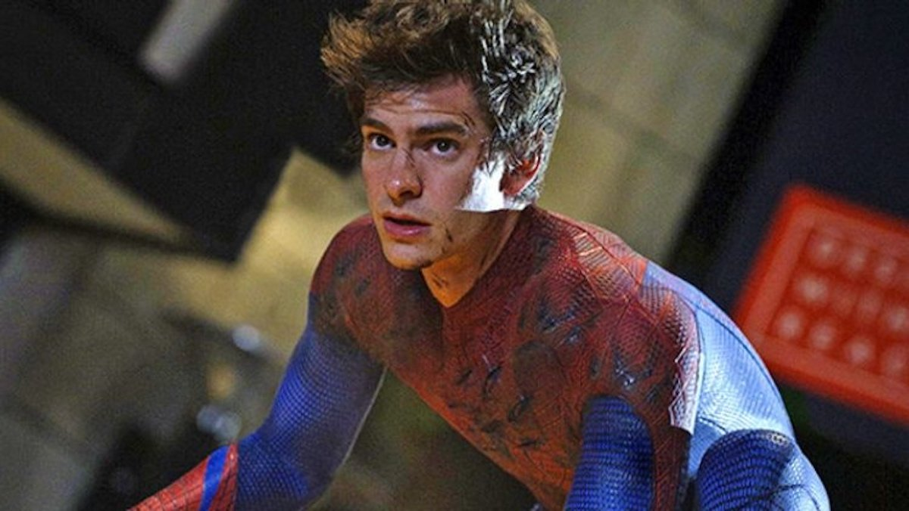

TOBEY MAGUIRE

Tobey Maguire is an American actor and film producer best known for his iconic role as Peter Parker in Sam Raimi's Spider-Man trilogy. Born in Santa Monica, California, he considered the possibility of becoming a child when but was approved by her mother, in acting classes and ended up falling in love. As a teenager, he dropped out of high school to focus on an acting career. currently he just has Twitter and no more social medias, because of the stress experienced with paparazzi while acting in Spider-Man.
- üß≠ Carrer Times : 31
- ▶ Movies and Series : 40
- üèÜ Awards : 7
ANDREW GARFIELD
Andrew Garfield was born in the United States but moved to England when he was just four years old. He made his film debut with the short Mumbo Jumbo in 2005, but in 2007 he made his first work with a renowned director, Robert Redford, when he acted in the film Lions and Lambs. In the same year, he was elected by the specialized magazine Variety as one of the 10 biggest promises (10 Actors to Watch).
- üß≠ Carrer Times : 13
- ▶ Movies and Series : 16
- üèÜ Awards : 10
TOM HOLLAND
Tom Holland is a British actor, voice actor and dancer born in Kingston upon Thames, London, England. The son of a photographer and a writer and stand-up comedian, he has three younger brothers. As a child, he attended Donhead, a Catholic elementary school. Furthermore, at the age of seven he was diagnosed with dyslexia. He later attended Wimbledon College and in December 2012 he studied at The BRIT School, a public school for performing arts and technology.
- üß≠ Carrer Times : 8
- ▶ Movies and Series : 23
- üèÜ Awards : 5